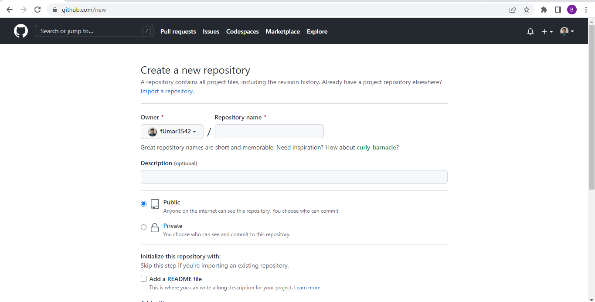

Following guide will be helpful in order to understand the use of GitHub
In order to create repository you first have to go to repositories tab and then click new as shown in image
Following steps should be taken in order to clone the repository in your system